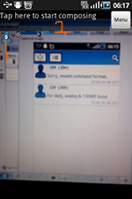
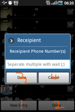
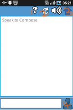

About
As humans there is a need to keep communicating
with friends, family and work partners. Sometime we find this stream
of communication broken or deferred, as a result of the need to move
from one location to another.
- Texting while walking on the streets, increases the chances
of bumping into things and people and even falling in ditches.
- Texting while driving is a serious offence in some
countries, and can lead to accidents. These cases are true because
humans need to maintain a constant stream of communication with
friend, family and work.
TextOnMotion brings you features to help you stay connected in such
conditions
Key Features
- Pedestrian Mode
- Interactive Mode
- Translucent Keyboard
- Text Translation
- Text shortening
- Location
- Widget
Pedestrian Mode
In pedestrian mode, Opens up your camera while texting, so you can
easily walk around and compose your message without lifting your year
from the phone and a reduced risk of bumping into people/things.
Interactive Mode
In Interactive mode, your phone acts lets you compose your message in
an interactive session. In other words, your phone takes orders and
asks questions. This feature come in handy when you need any or both of
your hand for other things.
Translucent Keyboard
A special bundles translucent keyboard further improves the Pedestrian
mode, by providing more viewable space, that could hve otherwise been
consumed by the default keyboard
Text Translation
Improve communication with your international friends or colleagues by
translating the text to their local language before sending.
Text shortening
Having 160 characters per page can be very limiting. You can configure
a word dictionary that is used to shorten long words. For instance in a
message "you" is shortened to "u", by default
Location
Add your current Location to your message. Location is acquired when
the application begins (and at configurable intervals), and shortened
with goo.gl for Text messaging purposes to web enabled non-android
phones, or those without GPS.
Widget
Reduce the number of clicks before you get to TextOnMotion in the
applications menu. Simply add a small all-in-one shortcut widget to
your home screen, that takes you to different aspects of the
application in one touch.
Backup & Restore
Transfer your messages to the same application on another phone, with
the back up feature. Simply start a backup, insert memory card in new
phone and restore. Or you could just backup in case of emergency.
How to use TextOnMotion
Home
The first home screen is what you are presented with on
application start up.
- 1. Touch this button to compose in pedestrian mode
- 2. Touch this button to compose in Interactive mode
- 3. Touch this button to search for messages
- 4. Touch a message to show the conversation between you and
the contact
Compose

- 1. Shows the number of currently added contacts
- 2. This is where composed message is displayed
Pressing the menu button on the device or screen, shows you various
sending options.
Contacts

Choose your preferred contacts from the contact list, if you
have to enter them manually, do that by touching "New Entry" (3). Touch
"Done" (4), When you're done. You can seperate multiple numbers with
Wait or ";" (semi-colon) on the keyboard.
Interactive Mode

- 1. Touch this is you need help at any time
- 2. Touch this to restart the messaging process
- 3. Touch this to send the message manually
- 4. Touch this to manually enter contacts
Interactive Mode procedure
Before Interactive mode begins, you're prompted, to make sure you are
ready to begin.
- The application asks you to say your message, a voice
recognition widget come up. To which you must speak clearly to your
phone
- When voice recognition stops, The phone prompts if you wish
to continue or not, to which you must respond "Yes" or "No". if there
is a recognition error, you are asked to say again. If you say yes,
you are asked to continue your message.
- On the other hand, you are prompted to add contacts. You
should add contacts by saying their number. For instance a 55632
phone number will be pronounced - five five six three three two
- once recognition is valid, you are asked if to send now.
Saying yes will send the message. No will ask you to add another
contact
For further support,
visit the application page
Challenge
Terms
TextOnMotion Terms